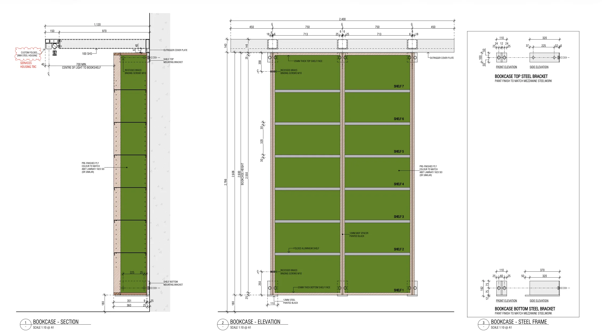
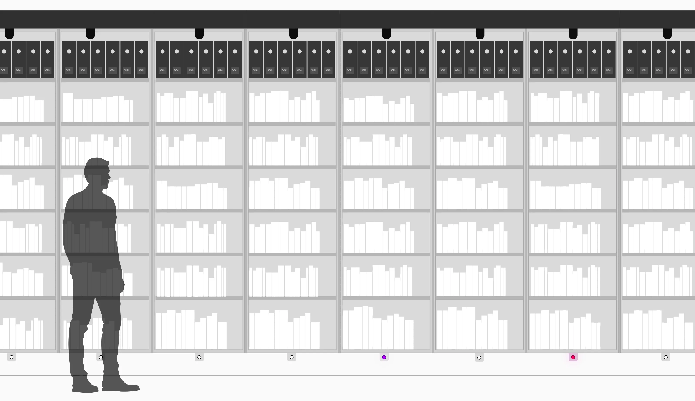
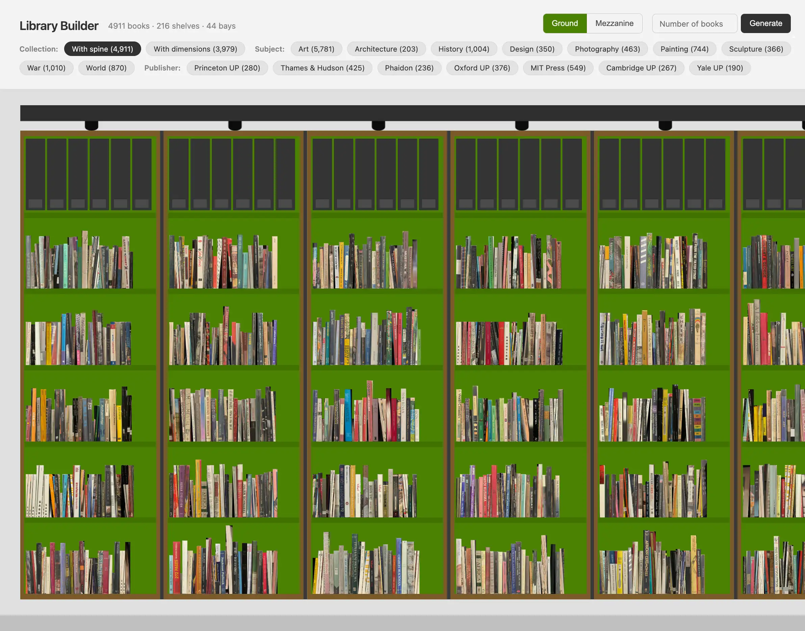

Library Builder
While working on the new library at Mona, the librarians and I identified a practical problem. Before anything is built, you still need some sense of how much space different parts of the collection might take up, and how they could sit together.

Architectural drawings from the architects showing a couple of book bays.
Thankfully we had architectural drawings of the book bays. Two bay types, ground and mezzanine, were translated into precise SVGs that could be filled with books at scale. We had a dataset of around 30,000 titles, of which about 25% had dimensions and spine images. This was enough information to make an educated guess for the rest of the collection, without pretending to be exact.

As part of the experience design work, I had created wireframes of the bays already.
The tool generates bays on demand. You can group by subject, publisher, or quantity and see how a collection occupies space. It lets librarians test arrangements early, while the building settles, long before a single book hits the shelf.

Ground floor bays populated from the collection database.
Try the tool at edwardblake.net/library